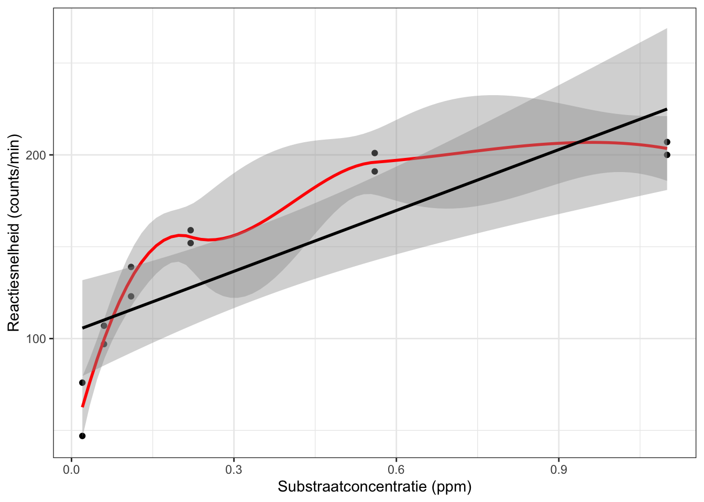
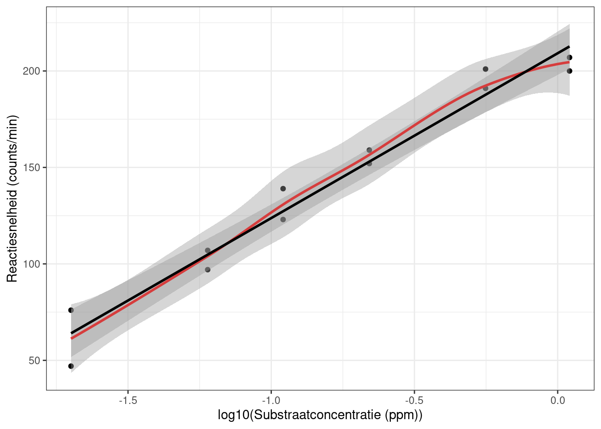
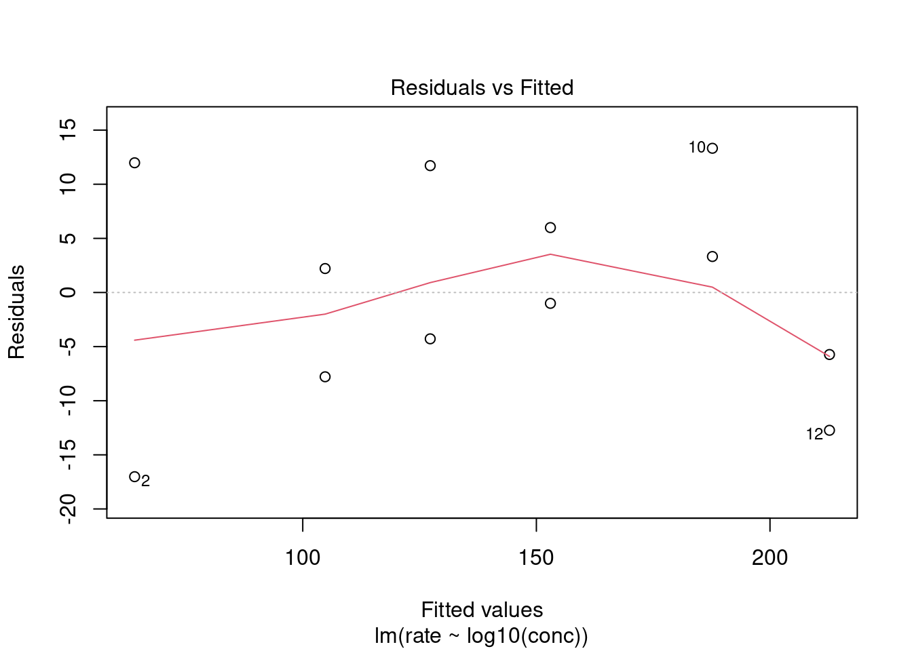
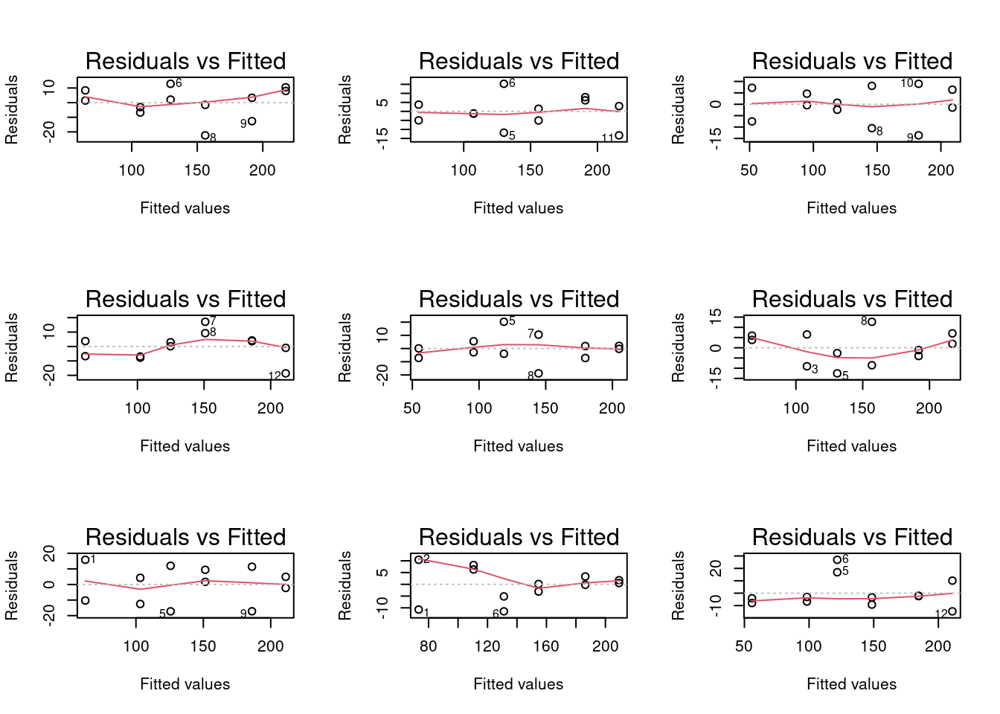
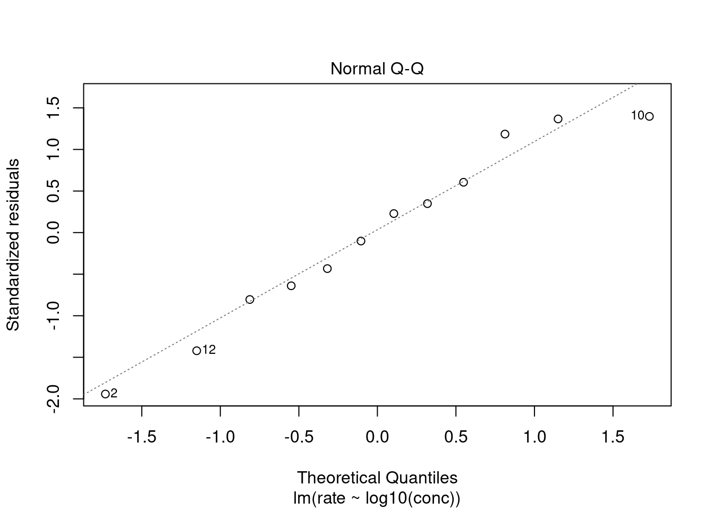
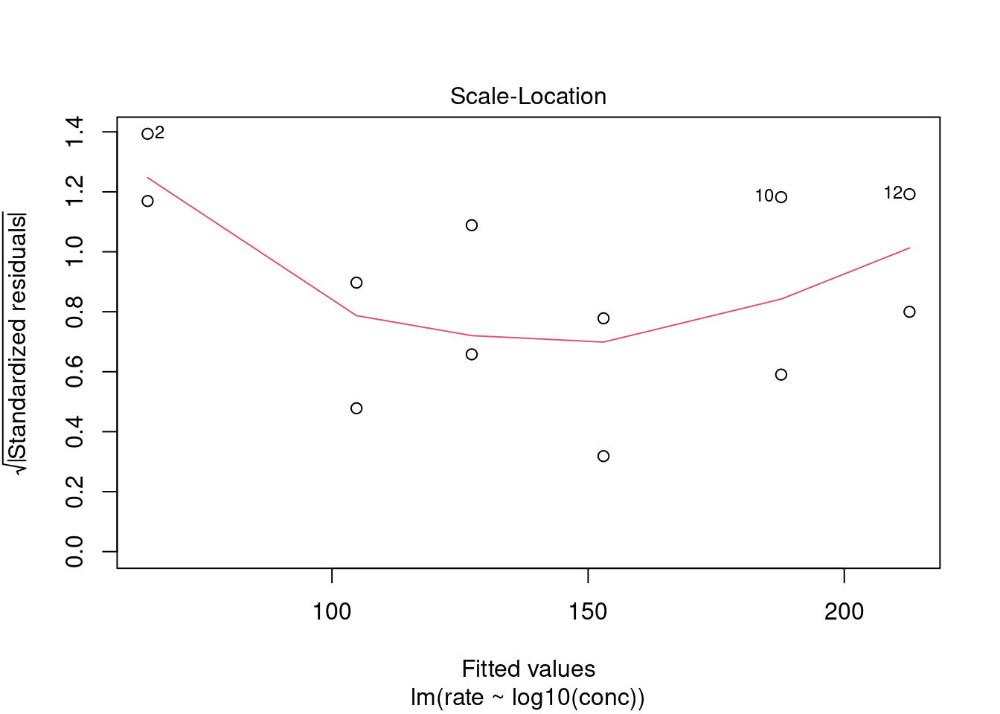
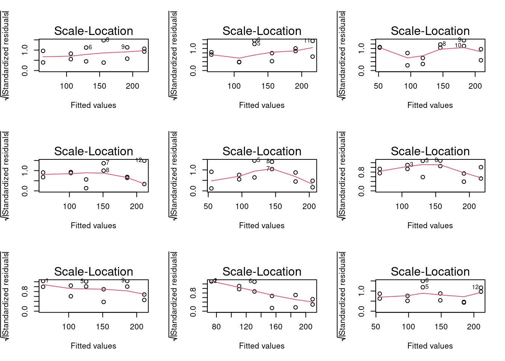

Invloed concentratie op
reactiesnelheid
De reactiesnelheid van een proces met een enzyme als katalysator
wordt opgemeten door het aantal radioactieve reactieproducten te tellen
in functie van de substraatconcentratie. Dat wordt gedaan voor een
reactiemengsel met Puromycine en zonder Puromycine.
We willen nagaan of er een lineair verband is tussen de gemiddelde
reactiesnelheid en de substraatconcentratie voor zowel de groep die
behandeld is met Puromycine als voor de controlegroep zonder Puromicine.
Aangezien we de data zouden moeten analyseren met een meervoudige
lineaire regressiemodel die het effect van de concentratie en de
behandeling kan modelleren, beperken we ons voorlopig tot de data van de
groep die behandeld is met Puromycine.
## ── Attaching packages ─────────────────────────────────────── tidyverse 1.3.2 ──
## ✔ ggplot2 3.3.6 ✔ purrr 0.3.4
## ✔ tibble 3.1.7 ✔ dplyr 1.0.9
## ✔ tidyr 1.2.0 ✔ stringr 1.4.1
## ✔ readr 2.1.2 ✔ forcats 0.5.1
## ── Conflicts ────────────────────────────────────────── tidyverse_conflicts() ──
## ✖ dplyr::filter() masks stats::filter()
## ✖ dplyr::lag() masks stats::lag()
data(Puromycin)
Puromycin <- Puromycin %>% filter(state=="treated")
Data exploratie
We plotten de reactiesnelheid tegenover de concentratie om de data te
exploreren.
Puromycin %>%
ggplot(aes(x=conc,y=rate)) +
geom_point() +
stat_smooth(method = "loess",col="red") + # fit een kromme door de punten (rode lijn)
stat_smooth(method='lm',col="black") + # fit een rechte door de punten aan de hand van de kleinstekwadratenmethode
ylab("Reactiesnelheid (counts/min)") +
xlab("Substraatconcentratie (ppm)") +
theme_bw()
## `geom_smooth()` using formula 'y ~ x'
## `geom_smooth()` using formula 'y ~ x'

Het ziet ernaar uit dat de data geen lineaire trend volgt. We gaan nu
het verband na log-transformatie van de substraatconcentratie. Gezien de
substraat concentratie in ppm is gemeten zullen we een log\(_{10}\) transformatie gebruiken (een waarde
van -2,-1,0 op log schaal is dan 0.01ppm, 0.1 ppm, 1 ppm).
Puromycin %>%
ggplot(aes(x=conc %>% log10,y=rate)) +
geom_point() +
stat_smooth(method = "loess",col="red") + # fit een kromme door de punten (rode lijn)
stat_smooth(method='lm',col="black") + # fit een rechte door de punten aan de hand van de kleinstekwadratenmethode
ylab("Reactiesnelheid (counts/min)") +
xlab("log10(Substraatconcentratie (ppm))") +
theme_bw()
## `geom_smooth()` using formula 'y ~ x'
## `geom_smooth()` using formula 'y ~ x'

Het verband tussen de reactiesnelheid en het logaritme van de
substraatconcentratie lijkt lineair. We zullen de reactiesnelheid dus
verder modelleren in functie van de log\(_{10}\)-substraatconcentratie.
Enkelvoudige lineaire
regressie
Enkelvoudige lineaire regressie is een regressie waarbij een
variabele gemodelleerd wordt in functie van slechts 1 variabele. De
verwachtte reactiesnelheid wordt dus \(E[Y_i]
= \beta_0 + \beta_1X_i\). In dit geval is \(Y\) de reactiesnelheid en \(X\) de log10-substraatconcentratie.
Het model wordt dan als volgt: \(reactiesnelheid_i = \beta_0 + \beta_1
log_{10}(concentratie_i) + \epsilon_i\)
met \(\beta_0\) het (werkelijke)
intercept, \(\beta_1\)
de (werkelijke) helling of meer specifiek het
(werkelijk) effect van log10(concentratie) op de gemiddelde
reactiesnelheid. Deze parameters gaan we schatten.
\(\epsilon_i\) is een foutterm
(“error term”), waarbij \(\epsilon_i\)
i.i.d. normaal verdeeld zijn met gemiddelde 0 en (constante) variantie
\(\sigma^2\).
Assumpties
Voordat we conclusies kunnen trekken uit het lineaire regressiemodel
moeten we nagaan of er aan de assumpties voldaan zijn. Voor de lineaire
regressie zijn dat volgende assumpties:
- Onafhankelijke gegevens
- Lineariteit tussen respons en predictor (impliceert dat residuen
rond nul verdeeld zijn, zonder merkbaar resterend patroon tussen de
residuen en de geschatte respons variabele)
- Normaal verdeelde residuen
- Gelijke variantie (homoscedasticiteit)
Onafhankelijke gegevens moeten we veronderstellen uit het
experimenteel design. De andere assumpties moeten we controleren.
Lineariteit tussen
reactiesnelheid en log\(_{10}\)(substraatconcentratie):
Zoals hierboven besproken lijkt het dat er een lineaire trend is
tussen reactiesnelheid en log\(_{10}\)(substraatconcentratie) in het
volledige bereik van de data.
De lineariteitsassumptie impliceert dat de residuen willekeurig rond
nul verdeeld zijn, onafhankelijk van waar we ons op de rechte bevinden.
Dit kunnen we weergeven door een lineair model te fitten op de data en
de residuen met een smoother weer te geven in functie van de gefitte
responswaarden.
model <- lm(rate~log10(conc),data = Puromycin)
model
##
## Call:
## lm(formula = rate ~ log10(conc), data = Puromycin)
##
## Coefficients:
## (Intercept) log10(conc)
## 209.19 85.45

Er lijken kleine afwijkingen te zijn bij de residuen van hogere
gefitted waarden. Er zijn echter niet zoveel observaties opgenomen in de
studie en de smoother geeft sowieso onnauwkeurig schattingen op de
eindpunten van het bereik.
Om na te gaan of de afwijkingen die we zien inderdaad plaucibel zijn
en kunnen worden veroorzaakt door random variabiliteit kunnen we gebruik
maken van simulaties waaruit we de data genereren onder de voorwaarden
van het lineaire model.
We simuleren 9 datasets met hetzelfde aantal observaties,
predictorwaarden, intercept, helling en standaarddeviatie. We fitten de
modellen en maken de residuplot.
set.seed(1031)
betas <- model %>% coefficients
sigma <- model %>% sigma
simModels <- list()
par(mfrow=c(3,3))
for (i in 1:9)
{
x <- Puromycin %>% pull("conc") %>% log10
nobs <- Puromycin %>% nrow
y <- betas[1] + betas[2] * x + rnorm(nobs, sd = sigma)
simModels[[i]] <- lm(y~x)
plot(simModels[[i]], which = 1)
}

Normaal verdeelde
residuen
We gaan via een qq-plot na of de residuen normaal verdeeld zijn.

We zien dat er geen systematische afwijkingen zijn van normaliteit,
en kunnen veronderstellen dat de kleine afwijkingen door toevallige
steekproefvariabiliteit komen.
Gelijke variantie
(homoscedasticiteit)
Bij lineaire regressie wil de assumptie van gelijkheid van variantie
zeggen dat de variantie van de residuen rond de regressierechte
hetzelfde is voor elke waarde van de predictor (predictorpatroon).
We kunnen dit opnieuw nagaan met de residu-plot. De spreiding van de
residuen zou min of meer gelijk moeten zijn voor elke gefitte
waarde.
Een andere plot die we hiervoor kunnen gebruiken is een plot waar we
de vierkantswortel van de absolute waarde van de gestandaardiseerde
residuen plotten in functie van de gefitte waarden. Als we hier een
smoother door trekken, zou de smoother een horizontaal verloop moeten
hebben. Indien er afwijkingen zouden zijn, bv. er is een systematische
trend waarbij de gestandaardiseerde residuen hoger/lager worden naarmate
de fitted values hoger/lager worden, dan betekent het dat de
variantie van de residuen hoger/lager wordt naarmate de geschatte
respons hoger/lager wordt.

Hier zien we kleine afwijkingen van een horizontale lijn bij de
uiterste waarden. Via simulatie zien we opnieuw dat deze afwijkingen
plaucibel zijn in een experiment met ons design wanneer alle aannames
geldig zijn.
par(mfrow = c(3,3))
for (i in 1:9)
plot(simModels[[i]], which = 3)

We kunnen dus veronderstellen dus dat de varianties gelijk zijn.
Nul- en alternatieve
hypothese:
We willen weten of er een lineaire associatie is tussen de
reactiesnelheid en de log\(_{10}\)
getransformeerde concentratie.
De nul- en alternatieve hypothese van het lineair model worden
dus:
\(H_0\): \(\beta_1 = 0\)
\(H_A\): \(\beta_1 \ne 0\)
Met andere woorden stelt de nulhypothese dat er geen associatie is
tussen de reactiesnelheid en de log\(_{10}\) concentratie, terwijl de
alternatieve hypothese stelt dat er juist wel een associatie is.
Fit het lineair model
en bespreek beide parameters, ga na of de nulhypothese verworpen wordt
en maak een interpretatie van het betrouwbaarheidsinterval.
summaryModel <- summary(model)
summaryModel
##
## Call:
## lm(formula = rate ~ log10(conc), data = Puromycin)
##
## Residuals:
## Min 1Q Median 3Q Max
## -17.0176 -6.2455 0.6039 7.4262 13.3228
##
## Coefficients:
## Estimate Std. Error t value Pr(>|t|)
## (Intercept) 209.194 5.045 41.47 1.59e-12 ***
## log10(conc) 85.450 5.133 16.65 1.28e-08 ***
## ---
## Signif. codes: 0 '***' 0.001 '**' 0.01 '*' 0.05 '.' 0.1 ' ' 1
##
## Residual standard error: 10.37 on 10 degrees of freedom
## Multiple R-squared: 0.9652, Adjusted R-squared: 0.9617
## F-statistic: 277.1 on 1 and 10 DF, p-value: 1.28e-08
confintModel <- confint(model)
confintModel
## 2.5 % 97.5 %
## (Intercept) 197.95335 220.43564
## log10(conc) 74.01255 96.88732
Conclusie
Er is een extreem significante lineaire associatie tussen de
substraatconcentratie op logschaal en de reactiesnelheid (p <<
0.001). Wanneer we de reactie laten doorgaan bij een
substraatconcentratie die 10 keer hoger is, is de reactiesnelheid
gemiddeld met 85.4 counts/min hoger (95% betrouwbaarheidsinterval [74,
96.9] counts/min).
Interpretatie
Het intercept is de geschatte gemiddelde reactiesnelheid bij een
log\(_{10}\)-concentratie van 0/een
substraat concentratie van 1 ppm en is gelijk aan 209.2
counts/min.
Helling
Log schaal: Wanneer we de reactie laten doorgaan bij een
substraatconcentratie die 1 eenheid op log\(_{10}\) schaal hoger is, is de
reactiesnelheid gemiddeld met 85.4 counts/min hoger.
Originele schaal: Wanneer we de reactie laten doorgaan bij een
substraatconcentratie die 10 keer hoger is, is de reactiesnelheid
gemiddeld met 85.4 counts/min hoger.
- 95% betrouwbaarheidsinterval: We hebben dus geschat dat het
werkelijke verschil in reactiesnelheid tussen twee reacties die doorgaan
onder een substraatconcentratie die een factor 10 verschillen met 95%
kans ligt tussen [74, 96.9] counts/min; merk op dat de reactie sneller
doorgaat in de reactie met de hoogste substraatconcentratie.
Schat de gemiddelde
reactiesnelheid bij een substraat concentratie van 0.2ppm en geef een
bijhorend 95%-betrouwbaarheidsinterval.
pred <- predict(model, newdata=data.frame(conc=0.2), interval="confidence")
pred
## fit lwr upr
## 1 149.4676 142.7162 156.2189
De geschatte gemiddelde reactiesnelheid bij een substraatconcentratie
van 10 ppm is 149.5 counts/min (95% betrouwbaarheidsinterval [142.7,
156.2] counts/min).
Algemene conclusie
Er is een extreem significante lineaire associatie tussen de
substraatconcentratie op logschaal en de reactiesnelheid (p <<
0.001). Wanneer we de reactie laten doorgaan bij een
substraatconcentratie die 10 keer hoger is, is de reactiesnelheid
gemiddeld met 85.4 counts/min hoger (95% betrouwbaarheidsinterval [74,
96.9] counts/min).
LS0tCnRpdGxlOiAiUHJhY3RpY3VtIDE6IE9lZmVuaW5nIDQiCmF1dGhvcjogIkFsZXhhbmRyZSBTZWdlcnMgJiBMaWV2ZW4gQ2xlbWVudCIKZGF0ZTogInN0YXRPbWljcywgR2hlbnQgVW5pdmVyc2l0eSAoaHR0cHM6Ly9zdGF0b21pY3MuZ2l0aHViLmlvKSIKb3V0cHV0OgogICAgaHRtbF9kb2N1bWVudDoKICAgICAgY29kZV9kb3dubG9hZDogdHJ1ZQogICAgICB0aGVtZTogY29zbW8KICAgICAgdG9jOiB0cnVlCiAgICAgIHRvY19mbG9hdDogdHJ1ZQogICAgICBoaWdobGlnaHQ6IHRhbmdvCiAgICAgIG51bWJlcl9zZWN0aW9uczogdHJ1ZQogICAgcGRmX2RvY3VtZW50OgogICAgICB0b2M6IHRydWUKICAgICAgbnVtYmVyX3NlY3Rpb25zOiB0cnVlCiAgICAgIGxhdGV4X2VuZ2luZTogeGVsYXRleApsaW5rY29sb3I6IGJsdWUKdXJsY29sb3I6IGJsdWUKY2l0ZWNvbG9yOiBibHVlCgotLS0KCjxhIHJlbD0ibGljZW5zZSIgaHJlZj0iaHR0cHM6Ly9jcmVhdGl2ZWNvbW1vbnMub3JnL2xpY2Vuc2VzL2J5LW5jLXNhLzQuMCI+PGltZyBhbHQ9IkNyZWF0aXZlIENvbW1vbnMgTGljZW5zZSIgc3R5bGU9ImJvcmRlci13aWR0aDowIiBzcmM9Imh0dHBzOi8vaS5jcmVhdGl2ZWNvbW1vbnMub3JnL2wvYnktbmMtc2EvNC4wLzg4eDMxLnBuZyIgLz48L2E+CgoKYGBge3Igc2V0dXAsIGluY2x1ZGU9RkFMU0V9CmtuaXRyOjpvcHRzX2NodW5rJHNldChlY2hvID0gVFJVRSkKYGBgCgojIEludmxvZWQgY29uY2VudHJhdGllIG9wIHJlYWN0aWVzbmVsaGVpZCAKCkRlIHJlYWN0aWVzbmVsaGVpZCB2YW4gZWVuIHByb2NlcyBtZXQgZWVuIGVuenltZSBhbHMga2F0YWx5c2F0b3Igd29yZHQgb3BnZW1ldGVuIGRvb3IgaGV0IGFhbnRhbCByYWRpb2FjdGlldmUgcmVhY3RpZXByb2R1Y3RlbiB0ZSB0ZWxsZW4gaW4gZnVuY3RpZSB2YW4gZGUgc3Vic3RyYWF0Y29uY2VudHJhdGllLiBEYXQgd29yZHQgZ2VkYWFuIHZvb3IgZWVuIHJlYWN0aWVtZW5nc2VsIG1ldCBQdXJvbXljaW5lIGVuIHpvbmRlciBQdXJvbXljaW5lLgoKV2Ugd2lsbGVuIG5hZ2FhbiBvZiBlciBlZW4gbGluZWFpciB2ZXJiYW5kIGlzIHR1c3NlbiBkZSBnZW1pZGRlbGRlIHJlYWN0aWVzbmVsaGVpZCBlbiBkZSBzdWJzdHJhYXRjb25jZW50cmF0aWUgdm9vciB6b3dlbCBkZSBncm9lcCBkaWUgYmVoYW5kZWxkIGlzIG1ldCBQdXJvbXljaW5lIGFscyB2b29yIGRlIGNvbnRyb2xlZ3JvZXAgem9uZGVyIFB1cm9taWNpbmUuIEFhbmdlemllbiB3ZSBkZSBkYXRhIHpvdWRlbiBtb2V0ZW4gYW5hbHlzZXJlbiBtZXQgZWVuIG1lZXJ2b3VkaWdlIGxpbmVhaXJlIHJlZ3Jlc3NpZW1vZGVsIGRpZSBoZXQgZWZmZWN0IHZhbiBkZSBjb25jZW50cmF0aWUgZW4gZGUgYmVoYW5kZWxpbmcga2FuIG1vZGVsbGVyZW4sIGJlcGVya2VuIHdlIG9ucyB2b29ybG9waWcgdG90IGRlIGRhdGEgdmFuIGRlIGdyb2VwIGRpZSBiZWhhbmRlbGQgaXMgbWV0IFB1cm9teWNpbmUuCgpgYGB7cn0KbGlicmFyeSh0aWR5dmVyc2UpCmxpYnJhcnkoZ2dwbG90MikKYGBgCgpgYGB7cn0KZGF0YShQdXJvbXljaW4pClB1cm9teWNpbiA8LSBQdXJvbXljaW4gJT4lIGZpbHRlcihzdGF0ZT09InRyZWF0ZWQiKQoKYGBgCgojIERhdGEgZXhwbG9yYXRpZQoKV2UgcGxvdHRlbiBkZSByZWFjdGllc25lbGhlaWQgdGVnZW5vdmVyIGRlIGNvbmNlbnRyYXRpZSBvbSBkZSBkYXRhIHRlIGV4cGxvcmVyZW4uCmBgYHtyfQpQdXJvbXljaW4gICU+JQogIGdncGxvdChhZXMoeD1jb25jLHk9cmF0ZSkpICsKICBnZW9tX3BvaW50KCkgKyAKICBzdGF0X3Ntb290aChtZXRob2QgPSAibG9lc3MiLGNvbD0icmVkIikgKyAjIGZpdCBlZW4ga3JvbW1lIGRvb3IgZGUgcHVudGVuIChyb2RlIGxpam4pCiAgc3RhdF9zbW9vdGgobWV0aG9kPSdsbScsY29sPSJibGFjayIpICsgIyBmaXQgZWVuIHJlY2h0ZSBkb29yIGRlIHB1bnRlbiBhYW4gZGUgaGFuZCB2YW4gZGUga2xlaW5zdGVrd2FkcmF0ZW5tZXRob2RlCiAgeWxhYigiUmVhY3RpZXNuZWxoZWlkIChjb3VudHMvbWluKSIpICsKICB4bGFiKCJTdWJzdHJhYXRjb25jZW50cmF0aWUgKHBwbSkiKSArCiAgdGhlbWVfYncoKQpgYGAKCkhldCB6aWV0IGVybmFhciB1aXQgZGF0IGRlIGRhdGEgZ2VlbiBsaW5lYWlyZSB0cmVuZCB2b2xndC4gV2UgZ2FhbiBudSBoZXQgdmVyYmFuZCBuYSBsb2ctdHJhbnNmb3JtYXRpZSB2YW4gZGUgc3Vic3RyYWF0Y29uY2VudHJhdGllLiBHZXppZW4gZGUgc3Vic3RyYWF0IGNvbmNlbnRyYXRpZSBpbiBwcG0gaXMgZ2VtZXRlbiB6dWxsZW4gd2UgZWVuIGxvZyRfezEwfSQgdHJhbnNmb3JtYXRpZSBnZWJydWlrZW4gKGVlbiB3YWFyZGUgdmFuIC0yLC0xLDAgb3AgbG9nIHNjaGFhbCBpcyBkYW4gMC4wMXBwbSwgMC4xIHBwbSwgMSBwcG0pLiAKCgpgYGB7cn0KUHVyb215Y2luICAlPiUKICBnZ3Bsb3QoYWVzKHg9Y29uYyAlPiUgbG9nMTAseT1yYXRlKSkgKwogIGdlb21fcG9pbnQoKSArIAogIHN0YXRfc21vb3RoKG1ldGhvZCA9ICJsb2VzcyIsY29sPSJyZWQiKSArICMgZml0IGVlbiBrcm9tbWUgZG9vciBkZSBwdW50ZW4gKHJvZGUgbGlqbikKICBzdGF0X3Ntb290aChtZXRob2Q9J2xtJyxjb2w9ImJsYWNrIikgKyAjIGZpdCBlZW4gcmVjaHRlIGRvb3IgZGUgcHVudGVuIGFhbiBkZSBoYW5kIHZhbiBkZSBrbGVpbnN0ZWt3YWRyYXRlbm1ldGhvZGUKICB5bGFiKCJSZWFjdGllc25lbGhlaWQgKGNvdW50cy9taW4pIikgKwogIHhsYWIoImxvZzEwKFN1YnN0cmFhdGNvbmNlbnRyYXRpZSAocHBtKSkiKSArCiAgdGhlbWVfYncoKQpgYGAKCkhldCB2ZXJiYW5kIHR1c3NlbiBkZSByZWFjdGllc25lbGhlaWQgZW4gaGV0IGxvZ2FyaXRtZSB2YW4gZGUgc3Vic3RyYWF0Y29uY2VudHJhdGllIGxpamt0IGxpbmVhaXIuIFdlIHp1bGxlbiBkZSByZWFjdGllc25lbGhlaWQgZHVzIHZlcmRlciBtb2RlbGxlcmVuIGluIGZ1bmN0aWUgdmFuIGRlIGxvZyRfezEwfSQtc3Vic3RyYWF0Y29uY2VudHJhdGllLgoKIyBFbmtlbHZvdWRpZ2UgbGluZWFpcmUgcmVncmVzc2llCgpFbmtlbHZvdWRpZ2UgbGluZWFpcmUgcmVncmVzc2llIGlzIGVlbiByZWdyZXNzaWUgd2FhcmJpaiBlZW4gdmFyaWFiZWxlIGdlbW9kZWxsZWVyZCB3b3JkdCBpbiBmdW5jdGllIHZhbiBzbGVjaHRzIDEgdmFyaWFiZWxlLiBEZSB2ZXJ3YWNodHRlIHJlYWN0aWVzbmVsaGVpZCB3b3JkdCBkdXMgJEVbWV9pXSA9IFxiZXRhXzAgKyBcYmV0YV8xWF9pJC4gSW4gZGl0IGdldmFsIGlzICRZJCBkZSByZWFjdGllc25lbGhlaWQgZW4gJFgkIGRlIGxvZzEwLXN1YnN0cmFhdGNvbmNlbnRyYXRpZS4KCkhldCBtb2RlbCB3b3JkdCBkYW4gYWxzIHZvbGd0OgokcmVhY3RpZXNuZWxoZWlkX2kgPSBcYmV0YV8wICsgXGJldGFfMSBsb2dfezEwfShjb25jZW50cmF0aWVfaSkgKyBcZXBzaWxvbl9pJAoKbWV0ICRcYmV0YV8wJCBoZXQgKHdlcmtlbGlqa2UpICoqaW50ZXJjZXB0KiosICRcYmV0YV8xJCBkZSAod2Vya2VsaWprZSkgKipoZWxsaW5nKiogb2YgbWVlciBzcGVjaWZpZWsgaGV0ICh3ZXJrZWxpamspICoqZWZmZWN0IHZhbiBsb2cxMChjb25jZW50cmF0aWUpIG9wIGRlIGdlbWlkZGVsZGUgcmVhY3RpZXNuZWxoZWlkKiouIERlemUgcGFyYW1ldGVycyBnYWFuIHdlIHNjaGF0dGVuLgoKJFxlcHNpbG9uX2kkIGlzIGVlbiBmb3V0dGVybSAoImVycm9yIHRlcm0iKSwgd2FhcmJpaiAkXGVwc2lsb25faSQgaS5pLmQuIG5vcm1hYWwgdmVyZGVlbGQgemlqbiBtZXQgZ2VtaWRkZWxkZSAwIGVuIChjb25zdGFudGUpIHZhcmlhbnRpZSAkXHNpZ21hXjIkLgoKIyMgQXNzdW1wdGllcwoKVm9vcmRhdCB3ZSBjb25jbHVzaWVzIGt1bm5lbiB0cmVra2VuIHVpdCBoZXQgbGluZWFpcmUgcmVncmVzc2llbW9kZWwgbW9ldGVuIHdlIG5hZ2FhbiBvZiBlciBhYW4gZGUgYXNzdW1wdGllcyB2b2xkYWFuIHppam4uIFZvb3IgZGUgbGluZWFpcmUgcmVncmVzc2llIHppam4gZGF0IHZvbGdlbmRlIGFzc3VtcHRpZXM6CgogMS4gT25hZmhhbmtlbGlqa2UgZ2VnZXZlbnMKIDIuIExpbmVhcml0ZWl0IHR1c3NlbiByZXNwb25zIGVuIHByZWRpY3RvciAoaW1wbGljZWVydCBkYXQgcmVzaWR1ZW4gcm9uZCBudWwgdmVyZGVlbGQgemlqbiwgem9uZGVyIG1lcmtiYWFyIHJlc3RlcmVuZCBwYXRyb29uIHR1c3NlbiBkZSByZXNpZHVlbiBlbiBkZSBnZXNjaGF0dGUgcmVzcG9ucyB2YXJpYWJlbGUpCiAzLiBOb3JtYWFsIHZlcmRlZWxkZSByZXNpZHVlbgogNC4gR2VsaWprZSB2YXJpYW50aWUgKGhvbW9zY2VkYXN0aWNpdGVpdCkKIAogT25hZmhhbmtlbGlqa2UgZ2VnZXZlbnMgbW9ldGVuIHdlIHZlcm9uZGVyc3RlbGxlbiB1aXQgaGV0IGV4cGVyaW1lbnRlZWwgZGVzaWduLiBEZSBhbmRlcmUgYXNzdW1wdGllcyBtb2V0ZW4gd2UgY29udHJvbGVyZW4uCiAKIyMjIExpbmVhcml0ZWl0IHR1c3NlbiByZWFjdGllc25lbGhlaWQgZW4gbG9nJF97MTB9JChzdWJzdHJhYXRjb25jZW50cmF0aWUpOgoKWm9hbHMgaGllcmJvdmVuIGJlc3Byb2tlbiBsaWprdCBoZXQgZGF0IGVyIGVlbiBsaW5lYWlyZSB0cmVuZCBpcyB0dXNzZW4gcmVhY3RpZXNuZWxoZWlkIGVuIGxvZyRfezEwfSQoc3Vic3RyYWF0Y29uY2VudHJhdGllKSBpbiBoZXQgdm9sbGVkaWdlIGJlcmVpayB2YW4gZGUgZGF0YS4gCgpEZSBsaW5lYXJpdGVpdHNhc3N1bXB0aWUgaW1wbGljZWVydCBkYXQgZGUgcmVzaWR1ZW4gd2lsbGVrZXVyaWcgcm9uZCBudWwgdmVyZGVlbGQgemlqbiwgb25hZmhhbmtlbGlqayB2YW4gd2FhciB3ZSBvbnMgb3AgZGUgcmVjaHRlIGJldmluZGVuLiBEaXQga3VubmVuIHdlIHdlZXJnZXZlbiBkb29yIGVlbiBsaW5lYWlyIG1vZGVsIHRlIGZpdHRlbiBvcCBkZSBkYXRhIGVuIGRlIHJlc2lkdWVuIG1ldCBlZW4gc21vb3RoZXIgd2VlciB0ZSBnZXZlbiBpbiBmdW5jdGllIHZhbiBkZSBnZWZpdHRlIHJlc3BvbnN3YWFyZGVuLiAKCmBgYHtyfQptb2RlbCA8LSBsbShyYXRlfmxvZzEwKGNvbmMpLGRhdGEgPSBQdXJvbXljaW4pIAptb2RlbApwbG90KG1vZGVsLHdoaWNoPTEpCmBgYCAKCkVyIGxpamtlbiBrbGVpbmUgYWZ3aWpraW5nZW4gdGUgemlqbiBiaWogZGUgcmVzaWR1ZW4gdmFuIGhvZ2VyZSBnZWZpdHRlZCB3YWFyZGVuLiBFciB6aWpuIGVjaHRlciBuaWV0IHpvdmVlbCBvYnNlcnZhdGllcyBvcGdlbm9tZW4gaW4gZGUgc3R1ZGllIGVuIGRlIHNtb290aGVyIGdlZWZ0IHNvd2llc28gb25uYXV3a2V1cmlnIHNjaGF0dGluZ2VuIG9wIGRlIGVpbmRwdW50ZW4gdmFuIGhldCBiZXJlaWsuIAoKT20gbmEgdGUgZ2FhbiBvZiBkZSBhZndpamtpbmdlbiBkaWUgd2UgemllbiBpbmRlcmRhYWQgcGxhdWNpYmVsIHppam4gZW4ga3VubmVuIHdvcmRlbiB2ZXJvb3J6YWFrdCBkb29yIHJhbmRvbSB2YXJpYWJpbGl0ZWl0IGt1bm5lbiB3ZSBnZWJydWlrIG1ha2VuIHZhbiBzaW11bGF0aWVzIHdhYXJ1aXQgd2UgZGUgZGF0YSBnZW5lcmVyZW4gb25kZXIgZGUgdm9vcndhYXJkZW4gdmFuIGhldCBsaW5lYWlyZSBtb2RlbC4gCgpXZSBzaW11bGVyZW4gOSBkYXRhc2V0cyBtZXQgaGV0emVsZmRlIGFhbnRhbCBvYnNlcnZhdGllcywgcHJlZGljdG9yd2FhcmRlbiwgaW50ZXJjZXB0LCBoZWxsaW5nIGVuIHN0YW5kYWFyZGRldmlhdGllLiAKV2UgZml0dGVuIGRlIG1vZGVsbGVuIGVuIG1ha2VuIGRlIHJlc2lkdXBsb3QuIAoKYGBge3J9CnNldC5zZWVkKDEwMzEpCmJldGFzIDwtIG1vZGVsICU+JSBjb2VmZmljaWVudHMKc2lnbWEgPC0gbW9kZWwgJT4lIHNpZ21hIAoKc2ltTW9kZWxzIDwtIGxpc3QoKQoKcGFyKG1mcm93PWMoMywzKSkKZm9yIChpIGluIDE6OSkKewogIHggPC0gUHVyb215Y2luICU+JSBwdWxsKCJjb25jIikgJT4lIGxvZzEwCiAgbm9icyA8LSBQdXJvbXljaW4gJT4lIG5yb3cKICB5IDwtIGJldGFzWzFdICsgYmV0YXNbMl0gKiB4ICsgcm5vcm0obm9icywgc2QgPSBzaWdtYSkKICBzaW1Nb2RlbHNbW2ldXSA8LSBsbSh5fngpCiAgcGxvdChzaW1Nb2RlbHNbW2ldXSwgd2hpY2ggPSAxKQp9CmBgYAoKIyMjIE5vcm1hYWwgdmVyZGVlbGRlIHJlc2lkdWVuCgpXZSBnYWFuIHZpYSBlZW4gcXEtcGxvdCBuYSBvZiBkZSByZXNpZHVlbiBub3JtYWFsIHZlcmRlZWxkIHppam4uCgpgYGB7cn0KcGxvdChtb2RlbCx3aGljaD0yKQpgYGAKCldlIHppZW4gZGF0IGVyIGdlZW4gc3lzdGVtYXRpc2NoZSBhZndpamtpbmdlbiB6aWpuIHZhbiBub3JtYWxpdGVpdCwgZW4ga3VubmVuIHZlcm9uZGVyc3RlbGxlbiBkYXQgZGUga2xlaW5lIGFmd2lqa2luZ2VuIGRvb3IgdG9ldmFsbGlnZSBzdGVla3Byb2VmdmFyaWFiaWxpdGVpdCBrb21lbi4KCiMjIyBHZWxpamtlIHZhcmlhbnRpZSAoaG9tb3NjZWRhc3RpY2l0ZWl0KQoKQmlqIGxpbmVhaXJlIHJlZ3Jlc3NpZSB3aWwgZGUgYXNzdW1wdGllIHZhbiBnZWxpamtoZWlkIHZhbiB2YXJpYW50aWUgemVnZ2VuIGRhdCBkZSB2YXJpYW50aWUgdmFuIGRlIHJlc2lkdWVuIHJvbmQgZGUgcmVncmVzc2llcmVjaHRlIGhldHplbGZkZSBpcyB2b29yIGVsa2Ugd2FhcmRlIHZhbiBkZSBwcmVkaWN0b3IgKHByZWRpY3RvcnBhdHJvb24pLiAKCldlIGt1bm5lbiBkaXQgb3BuaWV1dyBuYWdhYW4gbWV0IGRlIHJlc2lkdS1wbG90LiBEZSBzcHJlaWRpbmcgdmFuIGRlIHJlc2lkdWVuIHpvdSBtaW4gb2YgbWVlciBnZWxpamsgbW9ldGVuIHppam4gdm9vciBlbGtlIGdlZml0dGUgd2FhcmRlLiAKCkVlbiBhbmRlcmUgcGxvdCBkaWUgd2UgaGllcnZvb3Iga3VubmVuIGdlYnJ1aWtlbiBpcyBlZW4gcGxvdCB3YWFyIHdlIGRlIHZpZXJrYW50c3dvcnRlbCB2YW4gZGUgYWJzb2x1dGUgd2FhcmRlIHZhbiBkZSBnZXN0YW5kYWFyZGlzZWVyZGUgcmVzaWR1ZW4gcGxvdHRlbiBpbiBmdW5jdGllIHZhbiBkZSBnZWZpdHRlIHdhYXJkZW4uIEFscyB3ZSBoaWVyIGVlbiBzbW9vdGhlciBkb29yIHRyZWtrZW4sIHpvdSBkZSBzbW9vdGhlciBlZW4gaG9yaXpvbnRhYWwgdmVybG9vcCBtb2V0ZW4gaGViYmVuLiBJbmRpZW4gZXIgYWZ3aWpraW5nZW4gem91ZGVuIHppam4sIGJ2LiBlciBpcyBlZW4gc3lzdGVtYXRpc2NoZSB0cmVuZCB3YWFyYmlqIGRlIGdlc3RhbmRhYXJkaXNlZXJkZSByZXNpZHVlbiBob2dlci9sYWdlciB3b3JkZW4gbmFhcm1hdGUgZGUgKmZpdHRlZCB2YWx1ZXMqIGhvZ2VyL2xhZ2VyIHdvcmRlbiwgZGFuIGJldGVrZW50IGhldCBkYXQgZGUgdmFyaWFudGllIHZhbiBkZSByZXNpZHVlbiBob2dlci9sYWdlciB3b3JkdCBuYWFybWF0ZSBkZSBnZXNjaGF0dGUgcmVzcG9ucyBob2dlci9sYWdlciB3b3JkdC4KCmBgYHtyfQpwbG90KG1vZGVsLHdoaWNoPTMpCmBgYAoKSGllciB6aWVuIHdlIGtsZWluZSBhZndpamtpbmdlbiB2YW4gZWVuIGhvcml6b250YWxlIGxpam4gYmlqIGRlIHVpdGVyc3RlIHdhYXJkZW4uIFZpYSBzaW11bGF0aWUgemllbiB3ZSBvcG5pZXV3IGRhdCBkZXplIGFmd2lqa2luZ2VuIHBsYXVjaWJlbCB6aWpuIGluIGVlbiBleHBlcmltZW50IG1ldCBvbnMgZGVzaWduIHdhbm5lZXIgYWxsZSBhYW5uYW1lcyBnZWxkaWcgemlqbi4gCgpgYGB7cn0KcGFyKG1mcm93ID0gYygzLDMpKQpmb3IgKGkgaW4gMTo5KQogIHBsb3Qoc2ltTW9kZWxzW1tpXV0sIHdoaWNoID0gMykKYGBgCgpXZSBrdW5uZW4gZHVzIHZlcm9uZGVyc3RlbGxlbiBkdXMgZGF0IGRlIHZhcmlhbnRpZXMgZ2VsaWprIHppam4uCgoKCgojIyBOdWwtIGVuIGFsdGVybmF0aWV2ZSBoeXBvdGhlc2U6CgpXZSB3aWxsZW4gd2V0ZW4gb2YgZXIgZWVuIGxpbmVhaXJlIGFzc29jaWF0aWUgaXMgdHVzc2VuIGRlIHJlYWN0aWVzbmVsaGVpZCBlbiBkZSBsb2ckX3sxMH0kIGdldHJhbnNmb3JtZWVyZGUgY29uY2VudHJhdGllLiAKCkRlIG51bC0gZW4gYWx0ZXJuYXRpZXZlIGh5cG90aGVzZSB2YW4gaGV0IGxpbmVhaXIgbW9kZWwgd29yZGVuIGR1czoKCiRIXzAkOiAkXGJldGFfMSA9IDAkCiAKJEhfQSQ6ICRcYmV0YV8xIFxuZSAwJCAKCk1ldCBhbmRlcmUgd29vcmRlbiBzdGVsdCBkZSBudWxoeXBvdGhlc2UgZGF0IGVyIGdlZW4gYXNzb2NpYXRpZSBpcyB0dXNzZW4gZGUgcmVhY3RpZXNuZWxoZWlkIGVuIGRlIGxvZyRfezEwfSQgY29uY2VudHJhdGllLCB0ZXJ3aWpsIGRlIGFsdGVybmF0aWV2ZSBoeXBvdGhlc2Ugc3RlbHQgZGF0IGVyIGp1aXN0IHdlbCBlZW4gYXNzb2NpYXRpZSBpcy4KCiMjIEZpdCBoZXQgbGluZWFpciBtb2RlbCBlbiBiZXNwcmVlayBiZWlkZSBwYXJhbWV0ZXJzLCBnYSBuYSBvZiBkZSBudWxoeXBvdGhlc2UgdmVyd29ycGVuIHdvcmR0IGVuIG1hYWsgZWVuIGludGVycHJldGF0aWUgdmFuIGhldCBiZXRyb3V3YmFhcmhlaWRzaW50ZXJ2YWwuCgpgYGB7cn0Kc3VtbWFyeU1vZGVsIDwtIHN1bW1hcnkobW9kZWwpCnN1bW1hcnlNb2RlbAoKYGBgCgpgYGB7cn0KY29uZmludE1vZGVsIDwtIGNvbmZpbnQobW9kZWwpCmNvbmZpbnRNb2RlbApgYGAKCiMjIyBDb25jbHVzaWUgCgpFciBpcyBlZW4gZXh0cmVlbSBzaWduaWZpY2FudGUgbGluZWFpcmUgYXNzb2NpYXRpZSB0dXNzZW4gZGUgc3Vic3RyYWF0Y29uY2VudHJhdGllIG9wIGxvZ3NjaGFhbCBlbiBkZSByZWFjdGllc25lbGhlaWQgKHAgPDwgMC4wMDEpLiBXYW5uZWVyIHdlIGRlIHJlYWN0aWUgbGF0ZW4gZG9vcmdhYW4gYmlqIGVlbiBzdWJzdHJhYXRjb25jZW50cmF0aWUgZGllIDEwIGtlZXIgaG9nZXIgaXMsIGlzICBkZSByZWFjdGllc25lbGhlaWQgZ2VtaWRkZWxkIG1ldCBgciByb3VuZChtb2RlbCRjb2VmWzJdLDEpYCBjb3VudHMvbWluIGhvZ2VyICg5NSUgYmV0cm91d2JhYXJoZWlkc2ludGVydmFsIFtgciByb3VuZChjb25maW50TW9kZWxbMl0sMSlgLCBgciByb3VuZChjb25maW50TW9kZWxbNF0sMSlgXSBjb3VudHMvbWluKS4gCgoKIyMjIEludGVycHJldGF0aWUgCgoxLiBIZXQgaW50ZXJjZXB0IGlzIGRlIGdlc2NoYXR0ZSBnZW1pZGRlbGRlIHJlYWN0aWVzbmVsaGVpZCBiaWogZWVuIGxvZyRfezEwfSQtY29uY2VudHJhdGllIHZhbiAwL2VlbiBzdWJzdHJhYXQgY29uY2VudHJhdGllIHZhbiAxIHBwbSBlbiBpcyBnZWxpamsgYWFuIGByIHJvdW5kKG1vZGVsJGNvZWZmaWNpZW50c1sxXSwxKWAgY291bnRzL21pbi4KCjIuIEhlbGxpbmcKICAKICAtIExvZyBzY2hhYWw6ICBXYW5uZWVyIHdlIGRlIHJlYWN0aWUgbGF0ZW4gZG9vcmdhYW4gYmlqIGVlbiBzdWJzdHJhYXRjb25jZW50cmF0aWUgZGllIDEgZWVuaGVpZCBvcCBsb2ckX3sxMH0kIHNjaGFhbCBob2dlciBpcywgaXMgIGRlIHJlYWN0aWVzbmVsaGVpZCBnZW1pZGRlbGQgbWV0IGByIHJvdW5kKG1vZGVsJGNvZWZbMl0sMSlgIGNvdW50cy9taW4gaG9nZXIuCiAgCiAgLSBPcmlnaW5lbGUgc2NoYWFsOiBXYW5uZWVyIHdlIGRlIHJlYWN0aWUgbGF0ZW4gZG9vcmdhYW4gYmlqIGVlbiBzdWJzdHJhYXRjb25jZW50cmF0aWUgZGllIDEwIGtlZXIgaG9nZXIgaXMsIGlzICBkZSByZWFjdGllc25lbGhlaWQgZ2VtaWRkZWxkIG1ldCBgciByb3VuZChtb2RlbCRjb2VmWzJdLDEpYCBjb3VudHMvbWluIGhvZ2VyLgoKMy4gOTUlIGJldHJvdXdiYWFyaGVpZHNpbnRlcnZhbDogV2UgaGViYmVuIGR1cyBnZXNjaGF0IGRhdCBoZXQgd2Vya2VsaWprZSB2ZXJzY2hpbCBpbiByZWFjdGllc25lbGhlaWQgdHVzc2VuIHR3ZWUgcmVhY3RpZXMgZGllIGRvb3JnYWFuIG9uZGVyIGVlbiBzdWJzdHJhYXRjb25jZW50cmF0aWUgZGllIGVlbiBmYWN0b3IgMTAgdmVyc2NoaWxsZW4gbWV0IDk1JSBrYW5zIGxpZ3QgdHVzc2VuICBbYHIgcm91bmQoY29uZmludE1vZGVsWzJdLDEpYCwgYHIgcm91bmQoY29uZmludE1vZGVsWzRdLDEpYF0gY291bnRzL21pbjsgbWVyayBvcCBkYXQgZGUgcmVhY3RpZSBzbmVsbGVyIGRvb3JnYWF0IGluIGRlIHJlYWN0aWUgbWV0IGRlIGhvb2dzdGUgc3Vic3RyYWF0Y29uY2VudHJhdGllLiAKIAojIyBTY2hhdCBkZSBnZW1pZGRlbGRlIHJlYWN0aWVzbmVsaGVpZCBiaWogZWVuIHN1YnN0cmFhdCBjb25jZW50cmF0aWUgdmFuIDAuMnBwbSBlbiBnZWVmIGVlbiBiaWpob3JlbmQgOTUlLWJldHJvdXdiYWFyaGVpZHNpbnRlcnZhbC4KCmBgYHtyfQpwcmVkIDwtIHByZWRpY3QobW9kZWwsIG5ld2RhdGE9ZGF0YS5mcmFtZShjb25jPTAuMiksIGludGVydmFsPSJjb25maWRlbmNlIikKcHJlZApgYGAKCkRlIGdlc2NoYXR0ZSBnZW1pZGRlbGRlIHJlYWN0aWVzbmVsaGVpZCBiaWogZWVuIHN1YnN0cmFhdGNvbmNlbnRyYXRpZSB2YW4gMTAgcHBtICBpcyBgciByb3VuZChwcmVkWzFdLDEpYCBjb3VudHMvbWluICg5NSUgYmV0cm91d2JhYXJoZWlkc2ludGVydmFsIFtgciByb3VuZChwcmVkWzI6M10sMSlgXSBjb3VudHMvbWluKS4KCiMgQWxnZW1lbmUgY29uY2x1c2llCgpFciBpcyBlZW4gZXh0cmVlbSBzaWduaWZpY2FudGUgbGluZWFpcmUgYXNzb2NpYXRpZSB0dXNzZW4gZGUgc3Vic3RyYWF0Y29uY2VudHJhdGllIG9wIGxvZ3NjaGFhbCBlbiBkZSByZWFjdGllc25lbGhlaWQgKHAgPDwgMC4wMDEpLiBXYW5uZWVyIHdlIGRlIHJlYWN0aWUgbGF0ZW4gZG9vcmdhYW4gYmlqIGVlbiBzdWJzdHJhYXRjb25jZW50cmF0aWUgZGllIDEwIGtlZXIgaG9nZXIgaXMsIGlzICBkZSByZWFjdGllc25lbGhlaWQgZ2VtaWRkZWxkIG1ldCBgciByb3VuZChtb2RlbCRjb2VmWzJdLDEpYCBjb3VudHMvbWluIGhvZ2VyICg5NSUgYmV0cm91d2JhYXJoZWlkc2ludGVydmFsIFtgciByb3VuZChjb25maW50TW9kZWxbMl0sMSlgLCBgciByb3VuZChjb25maW50TW9kZWxbNF0sMSlgXSBjb3VudHMvbWluKS4gCgoKCg==